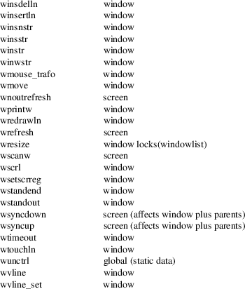

curs_threads − curses thread support
#include <curses.h>
typedef int
(*NCURSES_WINDOW_CB)(WINDOW *, void *);
typedef int (*NCURSES_SCREEN_CB)(SCREEN *, void *);
int
get_escdelay(void);
int set_escdelay(int ms);
int set_tabsize(int cols);
int
use_screen(SCREEN *scr, NCURSES_SCREEN_CB
func, void *data);
int use_window(WINDOW *win,
NCURSES_WINDOW_CB func, void
*data);
This implementation can be configured to provide rudimentary support for multi-threaded applications. This makes a different set of libraries, e.g., libncursest since the binary interfaces are different.
Rather than modify the interfaces to pass a thread specifier to each function, it adds a few functions which can be used in any configuration which hide the mutex’s needed to prevent concurrent use of the global variables when configured for threading.
In addition to forcing access to members of the WINDOW structure to be via functions (see curs_opaque(3X)), it makes functions of the common global variables, e.g., COLORS, COLOR_PAIRS, COLS, ESCDELAY, LINES, TABSIZE curscr, newscr and ttytype. Those variables are maintained as read-only values, stored in the SCREEN structure.
Even this is not enough to make a thread-safe application using curses. A multi-threaded application would be expected to have threads updating separate windows (within the same device), or updating on separate screens (on different devices). Also, a few of the global variables are considered writable by some applications. The functions described here address these special situations.
The ESCDELAY and TABSIZE global variables are modified by some applications. To modify them in any configuration, use the set_escdelay or set_tabsize functions. Other global variables are not modifiable.
The get_escdelay function returns the value for ESCDELAY.
The use_window and use_screen functions provide coarse granularity mutexes for their respective WINDOW and SCREEN parameters, and call a user-supplied function, passing it a data parameter, and returning the value from the user-supplied function to the application.
USAGE
All of the ncurses library functions assume that the locale
is not altered during operation. In addition, they use data
which is maintained within a hierarchy of scopes.
|
• |
global data, e.g., used in the low-level terminfo or termcap interfaces. | ||
|
• |
terminal data, e.g., associated with a call to set_curterm. The terminal data are initialized when screens are created. | ||
|
• |
screen data, e.g., associated with a call to newterm or initscr. | ||
|
• |
window data, e.g., associated with a call to newwin or subwin. Windows are associated with screens. Pads are not necessarily associated with a particular screen. |
Most curses applications operate on one or more windows within a single screen.
|
• |
reentrant, i.e., it uses only the data passed as parameters. |
This table lists the scope of data used for each symbol in the ncurses library when it is configured to support threading:

These functions all return TRUE or FALSE, except as noted.
Both a macro and a function are provided for each name.
These routines are specific to ncurses. They were not supported on Version 7, BSD or System V implementations. It is recommended that any code depending on ncurses extensions be conditioned using NCURSES_VERSION.
curses(3X), curs_opaque(3X), curs_variables(3X).